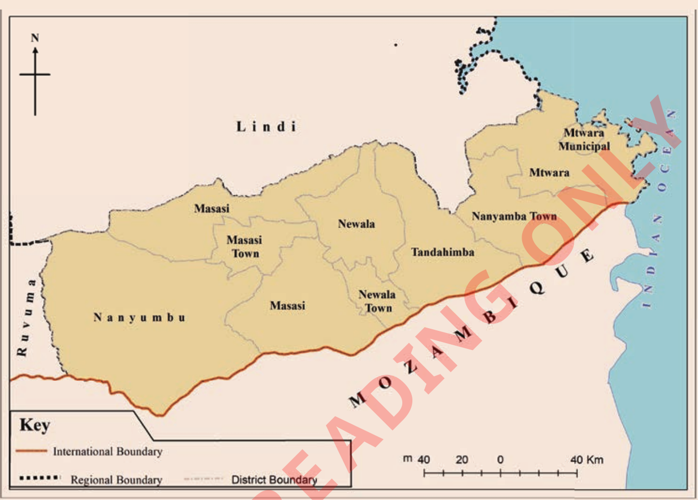

Activity 9
Observe Figure 27, then answer the following questions:

Questions
1. Which administrative boundaries are identified on the map?
2. How can you differentiate between the regional boundaries and district boundaries as indicated in Figure 27?
3. What are the social and economic effects that can occur if administrative boundaries are not correctly identified?